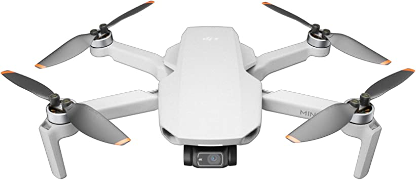

Here is a quote from DJI's website:
Headquartered in Shenzhen, widely considered China’s Silicon Valley, DJI benefits from direct access to the suppliers, raw materials, and young, creative talent pool necessary for sustained success. Drawing on these resources, we have grown from a single small office in 2006 to a global workforce. Our offices can now be found in the United States, Germany, the Netherlands, Japan, South Korea, Beijing, Shanghai, and Hong Kong. As a privately owned and operated company, DJI focuses on our own vision, supporting creative, commercial, and nonprofit applications of our technology. Today, DJI products are redefining industries. Professionals in filmmaking, agriculture, conservation, search and rescue, energy infrastructure, and more trust DJI to bring new perspectives to their work and help them accomplish feats safer, faster, and with greater efficiency than ever before.
Relatively speaking, the DJI Mini 2 is a fantastic drone. The price is right compared to other drones on the market, the drone itself is easy to use, reliable, and super convenient. Weighing less than 250 grams avoids a barrier to entry for new pilots, and the camera performance should keep aerial photographers happy.

I recommend this product to people who love photographing. This is a good product for those who just starts flying drone. First of all, it is not expensive for beginners, and with the light weight, users do not need to register on Federal Aviation Administration. However, it is a cheap drone for beginner, it cannot take pictures with raw which means the quality of the pictures are as good as cameras.